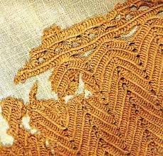
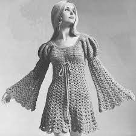

Ancient History
O crochê tem suas raízes profundas na história, com evidências de seu uso em diversas culturas ao redor do mundo. A técnica pode ser rastreada até o Império Romano, onde os romanos utilizavam agulhas de osso para criar tecidos rendados. Essa prática têxtil se espalhou para o Oriente Médio e, eventualmente, para a Europa.
O crochê eventualmente viajou pelo mundo, adaptando-se às diferentes culturas e estilos de vida. Na América do Norte, por exemplo, as mulheres pioneiras usavam o crochê para confeccionar roupas e acessórios práticos. O crochê também desempenhou um papel importante durante as duas guerras mundiais, quando as pessoas usavam suas habilidades de crochê para confeccionar itens essenciais para soldados.
Modern History
No início do século 20, o crochê era uma habilidade essencial ensinada às mulheres jovens, e era comum encontrar crochê em roupas, lençóis e acessórios. Durante as décadas de 1950 e 1960, o crochê ganhou popularidade como uma forma de expressão artística. Celebridades, como Audrey Hepburn, popularizaram os elegantes vestidos de crochê, e os hippies adotaram o crochê em roupas e decorações como símbolo de contracultura.
O crochê continuou a fazer parte da moda na década de 1970, com peças boêmias e hippies. No entanto, nas décadas de 1980 e 1990, o crochê viu um declínio em sua popularidade, à medida que as tendências da moda mudaram para estilos mais minimalistas e tecnológicos. A percepção do crochê tornou-se muitas vezes associada a algo antiquado. No século 21, o crochê experimentou um renascimento notável, em grande parte devido à era digital. As redes sociais e as plataformas de compartilhamento de fotos permitiram que artesãos de crochê compartilhassem suas criações e técnicas, inspirando uma nova geração de entusiastas. Blogs, tutoriais em vídeo e comunidades online tornaram o aprendizado do crochê mais acessível do que nunca.